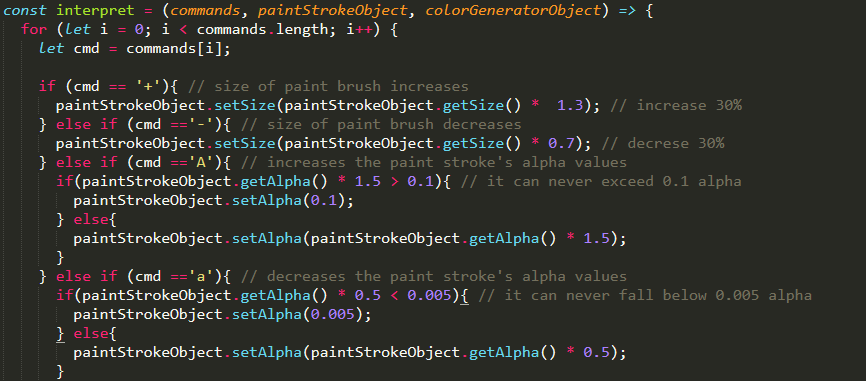
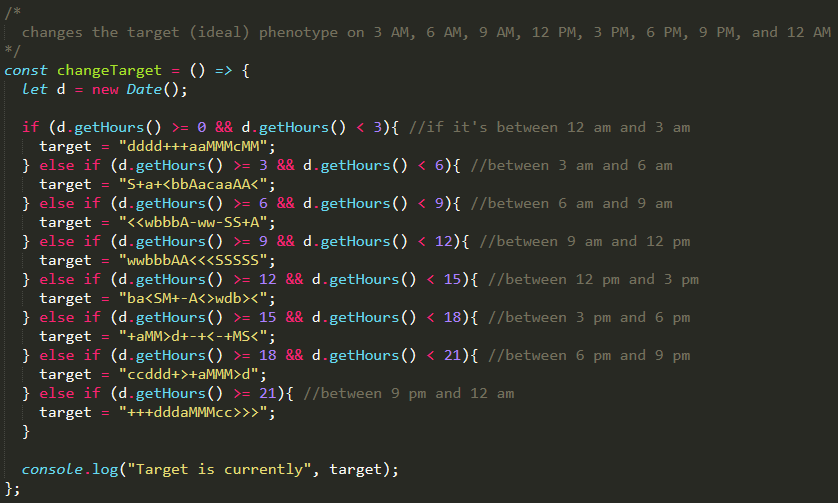
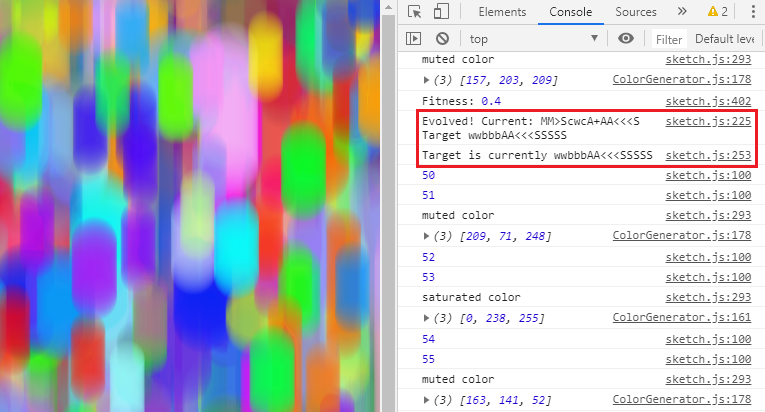
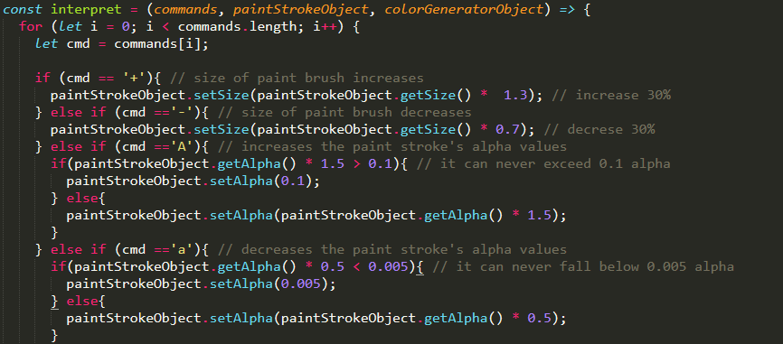
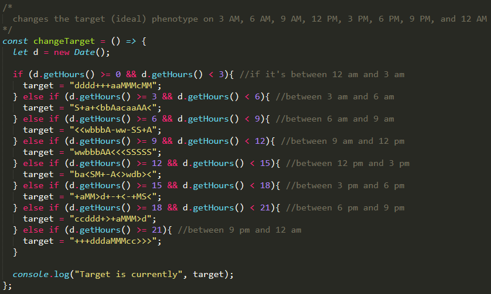
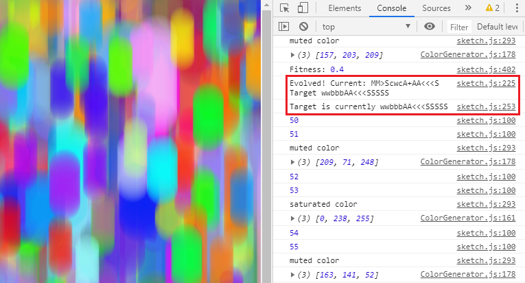
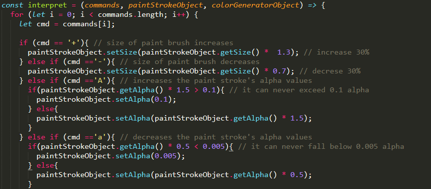
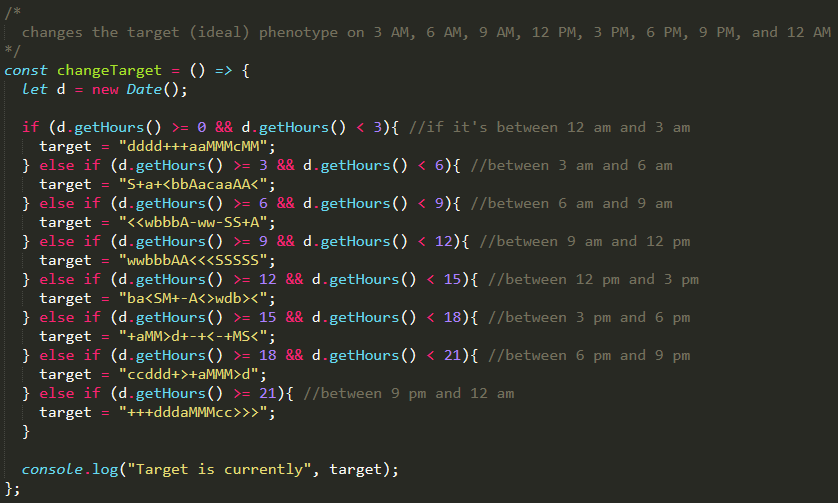
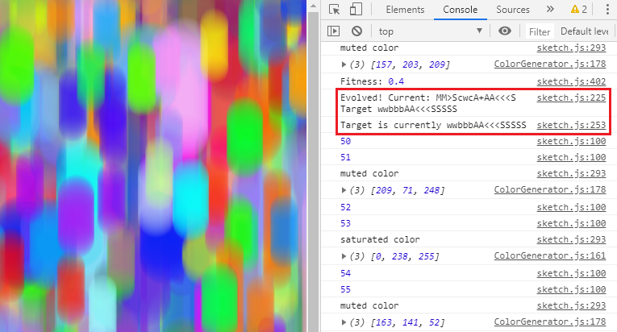

Source code: https://github.com/erikfern/painting-over-time
Painting Over Time is an assignment for York University's Digital Media course, DATT 4950: Artificial Life. Realized by using p5.js, a JavaScript library for creative coding on an HTML5 canvas, this is a painting comprised of downward brush strokes that changes its properties according to the time of day, such as the colour saturation and the length of each brush stroke. Taking Charles Darwin's concept of natural selection and applying a simple implementation of artificial intelligence (AI), the paintbrush is given a simple evolutionary strategy: to change in small increments several times per minute, discarding unwanted traits while retaining ones which are seen as ideal by the time of day. This means that the painting will make drastic changes as the day transitions from morning to afternoon, and from afternoon to night.
The AI continously distributes genes to the paintbrush which then defines its the properties of its paint stroke. The set of genes, DNA, given to the paintbrush is a set of fifteen characters, with each one slightly influencing how the paint brush will behave on the canvas. For example, the "+" character increases the size of the paintbrush by 30%. If there are three "+" characters in the DNA, then the paint brush size is increased to 90%. Typically, the child inherits its predecessors' DNA. However, there is a random chance that the child's DNA may mutate, receiving one or several random genes not inherited from the parent.
This painting is meant to demostrate the complexity of the evolution of a species when the environment is taken to account. Just like a species evolving over time to adapt to their environment, the paintbrush evolves to match the ideal set of characteristics a painting must have during that time of day. The program is able to compare its DNA to the ideal set of genes provided by that time of day, and will then slowly work towards copying it. However, since the environment changes every few hours, and with it changes the ideal set of genes, the paintbrush is in a perpetual state of evolution, never actually able to achieve peak fitness due to the ever-changing environment.


